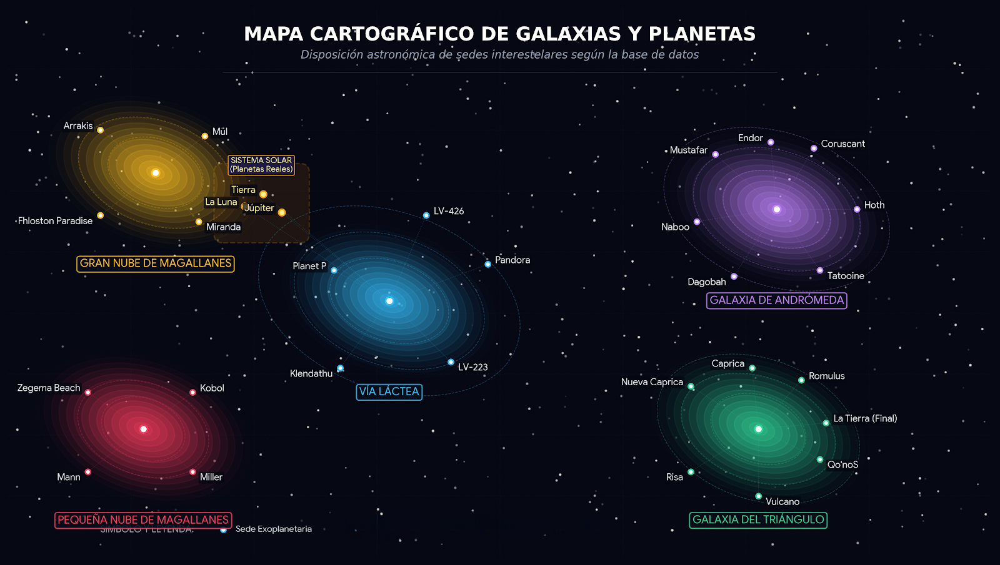

4 Geografía galáctica.

El universo conocido de R-Stars abarca cinco galaxias, cada una con sus mundos, sus rutas y sus peculiaridades culturales. Conviene tener presente que las distancias, incluso con especia natural, siguen siendo considerables: una ruta intergaláctica típica implica varias semanas subjetivas de tránsito y una lista sorprendentemente larga de trámites aduaneros.
4.1 Las cinco galaxias.
Vía Láctea. Galaxia espiral de tamaño medio. Sigue siendo el centro administrativo del sector por razones históricas (aquí nació la humanidad) más que por razones logísticas. Alberga la Tierra, Pandora y buena parte de las oficinas centrales de las compañías más antiguas.
Galaxia de Andrómeda (M31). Galaxia espiral, la más poblada del sector en número de mundos habitados. Andrómeda es hoy el verdadero motor comercial del universo R-Stars: en ella se encuentran Tatooine, Mustafar y la sede de la Federación de Rutas Espaciales.
Galaxia del Triángulo (M33). Galaxia espiral menor. Menos poblada, pero estratégicamente situada entre la Vía Láctea y Andrómeda; muchas rutas intergalácticas la utilizan como escala técnica.
Gran Nube de Magallanes (LMC). Galaxia irregular, rica en gas y con intensa formación estelar. Aloja Arrakis —y, por tanto, la práctica totalidad de la producción de especia— y una nutrida colonia de mundos mineros. El Cinturón de Magallanes que la rodea es célebre por sus tormentas de radiación.
Pequeña Nube de Magallanes (SMC). Galaxia irregular, satélite de la anterior. Frontera efectiva del sector: más allá empieza el territorio no cartografiado, todavía objeto de expediciones especulativas.
4.2 Planetas destacados.
El grueso de la actividad se concentra en una treintena de planetas. Los siguientes son los más relevantes desde el punto de vista de los ejercicios de los manuales; el resto aparecen mencionados de forma tangencial y no requieren mayor presentación.
4.2.1 Arrakis (Gran Nube de Magallanes).
Es, sin discusión, el enclave más estratégico del sector: sus yacimientos de especia —único combustible viable para el plasma warp intergaláctico— sostienen a Arrakis Freight, Shuttlepod Movers y buena parte de la economía galáctica. Su puerto orbital nunca duerme, y su clase política mantiene con las flotas de escolta un delicado equilibrio que rara vez se explicita en los comunicados oficiales.
4.2.2 Tatooine (Andrómeda).
Colonizada tras las primeras rondas diplomáticas de principios del siglo XXII, es un mundo desértico con grandes bases operativas, célebre por la resiliencia de su población y por sus dos soles (detalle astronómico que sus habitantes se cansaron de comentar hace un siglo).
4.2.3 Pandora (Vía Láctea).
Uno de los primeros mundos colonizados; su ecosistema protegido lo ha convertido en fuente privilegiada de componentes biotecnológicos, tras un largo y disputado acuerdo con la civilización local.
4.2.4 Coruscant (Andrómeda).
Alberga los inmensos y relucientes astilleros orbitales de Enterprise Logistics, cuyos cargueros llevan por lema el clásico “llegar donde ningún carguero llegó antes”.
4.2.5 Mustafar (Andrómeda).
Base de Kaiju Haulage Co. y una de las principales fuentes de cristales kyber; su inestabilidad política —eufemismo diplomático para “todo el mundo está siempre a punto de derrocar a alguien”— la convierte, no obstante, en una plaza de alto riesgo operativo.
4.2.6 Fhloston Paradise, Naboo, Miranda.
Fhloston Paradise y Naboo albergan ecosistemas protegidos de los que se extraen componentes biotecnológicos de altísimo valor. Miranda es la sede de Hyperdrive Express, la compañía tecnológica de más rápido crecimiento del sector.
4.2.7 El resto del catálogo.
El resto de la nómina se reparte entre mundos históricos (Tierra, Vulcano, Qo’noS, Kobol), colonias industriales (Júpiter, Endor, Dagobah, Mül, Romulus, Caprica, Nueva Caprica) y enclaves más exóticos (LV-223, LV-426, Planet P), estos últimos con una reputación logística que oscila entre lo desafiante y lo francamente suicida.
4.3 Zonas de riesgo y nuevas fronteras.
Ningún sector maduro está exento de problemas, y el nuestro tiene los suyos:
Piratería. Los sistemas de Klendathu y Miller son las célebres “zonas rojas” del sector. El primero por su tradición de contrabando bien organizado; el segundo por saqueos francamente menos organizados pero igual de eficaces. Los seguros de carga aplican recargos de dos dígitos a cualquier ruta que los atraviese.
Riesgos climáticos. Las tormentas de radiación del Cinturón de Magallanes son el fenómeno meteorológico más temido por los pilotos. Los astilleros compiten por producir cascos capaces de resistirlas; los brokers, por asegurarlas.
Nuevas fronteras. Las compañías más ambiciosas exploran ya rutas hacia la Galaxia de Cetus y la Nube Circungaláctica. Los primeros contratos se firman a márgenes muy generosos, pero también con cláusulas de fuerza mayor que dan pie a debates jurisprudenciales encendidos.